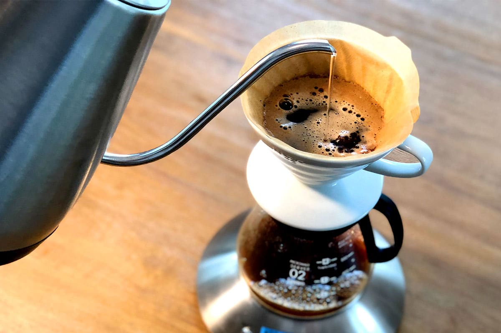

Pour Over Coffee

Description
Brewing your coffee using a hario v60
will result in extracting more satisfying, flavorful
brews from your favorite local beans.
Ingredients
- 30mg Coffee Beans
- 1 V60 Filter Paper
- 500mg Water
Steps
- Grind your beans and preheat your kettle.
- Wet the filter that you place into your v60 brewer to remove paper taste.
- Pour 500mg of water from your kettle over the ground beans.
Refer to this video for more detailed instructions: The Ultimate V60 Technique